Chapitre 6 Représentation Graphique
Cette partie est destinée à présenter comment construire et personnaliser des graphiques sous R. Jusqu’à présent, on a abordé brièvement les graphiques univariés dans les parties précédentes à travers les fonctions barplot, boxplot, et hist.Volontairement, nous ferons les premiers pas sans utiliser le package ggplot2 que nous verrons plus tard. Pour un tutoriel complet de ggplot2 vous pouvez vous dirigez vers le cours de Julien Barnier
Pour illustrer les concepts, nous travaillerons sur les données iris. Un jeu de données de 150 fleurs réparties en 3 espèces différentes (setosa, versicolor et virginica) et caractérisées par 4 variables quantitatives.
| Sepal.Length | Sepal.Width | Petal.Length | Petal.Width | Species |
|---|---|---|---|---|
| 5.1 | 3.5 | 1.4 | 0.2 | setosa |
| 4.9 | 3.0 | 1.4 | 0.2 | setosa |
| 4.7 | 3.2 | 1.3 | 0.2 | setosa |
| 4.6 | 3.1 | 1.5 | 0.2 | setosa |
| 5.0 | 3.6 | 1.4 | 0.2 | setosa |
| 5.4 | 3.9 | 1.7 | 0.4 | setosa |
6.1 Les fenêtres graphiques
La fenêtre graphique de RStudio permet d’afficher les graphiques qui ont été générés.

Le bouton Export permet d’exporter le graphique en tant qu’image ou pdf.

On peut aussi exporter un graphique avec la fonction dev.print.
Il est possible de découper la fenêtre graphique pour en afficher plusieurs à la fois. Pour cela on utilise la fonction par avec l’argument mfrow en précisant le découpage de la fenêtre.
par(mfrow=c(1,2)) #fenêtre sur une ligne et deux colonnes
plot(iris$Sepal.Length,iris$Sepal.Width)
plot(iris$Petal.Length,iris$Petal.Width)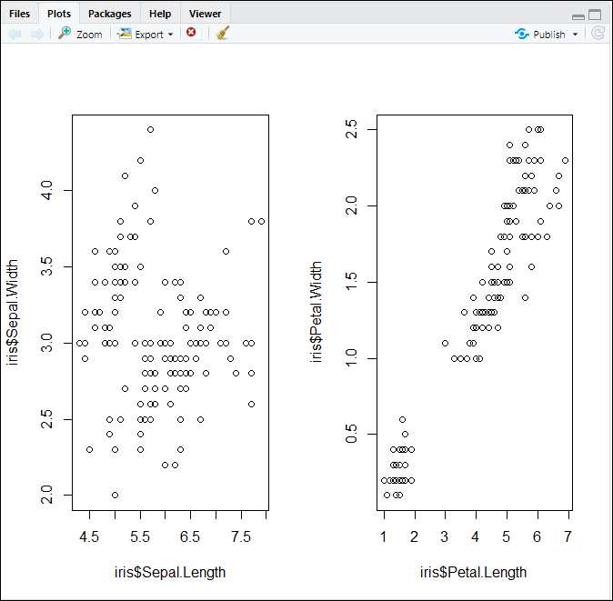
Pour réinitialiser le découpage de la fenêtre graphique, on redimensionne la fenêtre sur 1 x 1.
6.2 Les fonctions de tracé de bas niveau
Nous allons illustrer les fonctions graphiques du langage R à travers la représentation d’un nuage de points.
Pour construire un nuage de points, on utilise la fonction plot en précisant les deux vecteurs numériques que l’on souhaite projeter.

Dans l’exemple ci-dessus, on précise les caractéristiques du graphique directement dans la fonction plot. Mais, il est également possible d’ajouter des éléments avec d’autres fonctions issues notamment du package graphics déjà chargé par défaut dans RStudio.
#Ajouter des éléments
plot(x = iris$Sepal.Length,y = iris$Sepal.Width,
xlim = c(4,9),ylim = c(1,5),
xlab = "Sepal Length",ylab = "Sepal Width")
#Ajouter un titre
title(main = "Sepal Width and Sepal Length")
#Ajouter un sous titre
mtext(text = "(Source : Iris)",side=4)
#Ajouter des lignes
abline(h = 3)
abline(v = 6)
#Ajouter du texte
text(x = 5,y = 1.5,labels = "Groupe 1")
text(x = 5,y = 4.5,labels = "Groupe 2")
text(x = 7,y = 4.5,labels = "Groupe 3")
text(x = 7,y = 2,labels = "Groupe 4")
#Ajouter des points
points(x = c(9,9,9),y = c(4,4.5,5))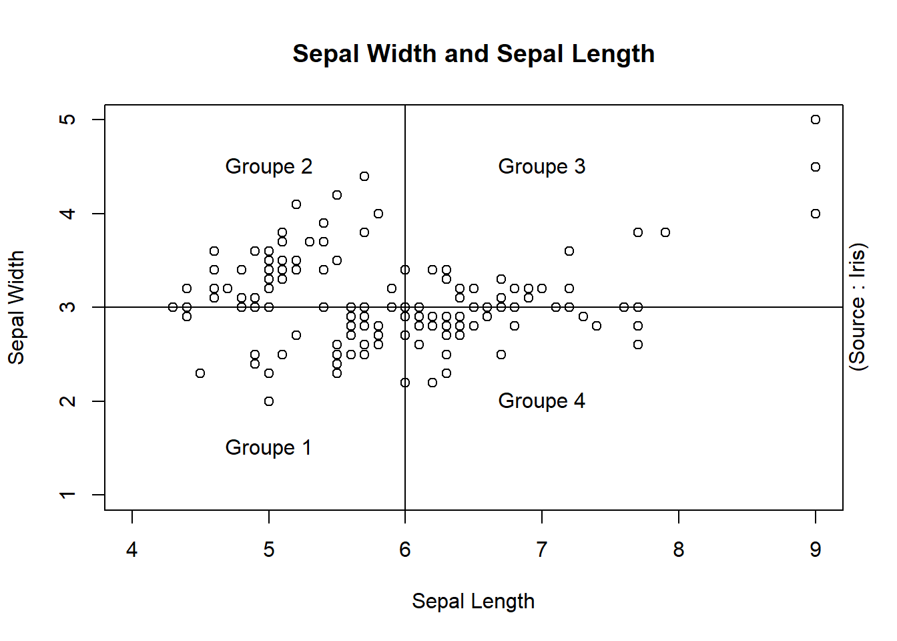
Attention : Les fonctions des éléments graphiques ajoutent les éléments sur le graphique en cours de lecture dans la fenêtre graphique.
6.3 Personnaliser des éléments graphiques
6.3.1 Mise en forme
On peut aussi personnaliser les différents éléments du graphique en utilisant les arguments de chaque fonction.
plot(x = iris$Sepal.Length,y = iris$Sepal.Width,
xlim = c(4,9),ylim = c(1,5),
xlab = "Sepal Length",ylab = "Sepal Width",
col = iris$Species, pch = 19 )
title(main = "Sepal Width and Sepal Length",
cex.main = 2,font.main=4, col.main= "red")
mtext(text = "(Source : Iris)",side=4, font=2)
abline(h = 3 , lty = 3 , lwd = 4)
abline(v = 6 , lty = 3 , lwd = 2)
text(x = 5,y = 1.5,labels = "Groupe 1", col = 3)
text(x = 5,y = 4.5,labels = "Groupe 2", col = 2)
text(x = 7,y = 4.5,labels = "Groupe 3", col = 4)
text(x = 7,y = 2,labels = "Groupe 4", col = 5)
points(x = c(9,9,9),y = c(4,4.5,5), pch = 4 , col = c("red","blue"))
legend(x = "bottomright", legend=levels(iris$Species),
col=c(1:3), pch = 19, cex=0.8)
legend(x = 6.5, y=1.5, legend="points \n supplémentaires",
pch = 4, cex=0.8 , box.lty=0)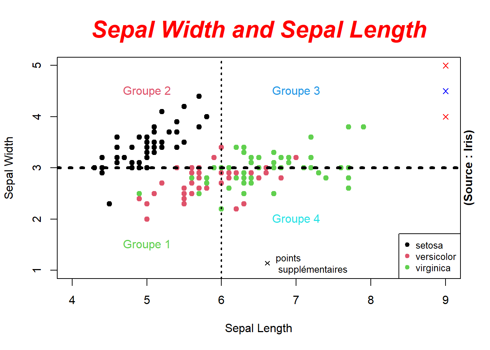
Par exemple l’argument pch définit la forme du point et l’argument lty la forme du trait. Voici une table de correspondance :

6.3.2 Gestion des couleurs
Dans R, la gestion des couleurs est assez simple. Jusqu’à présent, pour construire les graphiques on se contentait de renseigner les arguments col des fonctions avec le nom d’une couleur comme red, blue, ou de préciser des numéros dans des vecteurs comme c(1,2,3). Mais comment R fait-il pour interpréter cela ?
En réalité, il existe une palette par défaut dans R. Elle est composée de 8 couleurs. On peut les retrouver avec la fonction palette().
## [1] "black" "red" "green3" "blue" "cyan" "magenta" "yellow"
## [8] "gray"Ainsi, on peut définir les couleurs que l’on souhaite dans cette palette en précisant le nom ou le numéro de la couleur. C’est pourquoi, il est possible de définir les couleurs de différentes catégories si le vecteur est défini en tant que factor.
## [1] "factor"plot(x = iris$Sepal.Length,y = iris$Sepal.Width,
col = iris$Species, pch = 19)
legend(x = "bottomright", legend=levels(iris$Species),
col=c(1:3), pch = 19, cex=0.8)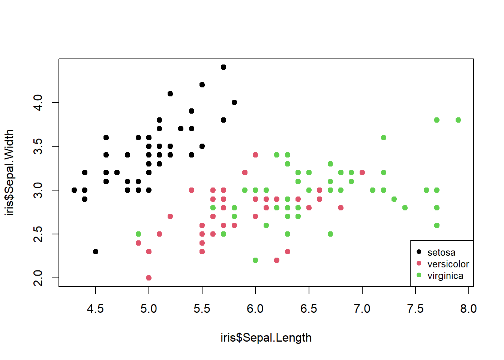
Dans R, un vecteur de type factor est stocker au format numérique en mémoire ou chaque nombre représente l’indice du niveau associé à la catégorie.
## [1] "setosa" "versicolor" "virginica"L’espèce setosa prendra la valeur 1, versicolor la valeur 2 et virignica la valeur 3. Ces niveaux seront donc associés aux 3 premières couleurs de la palette par défaut.
## [1] "black" "red" "green3"On aura donc black pour setosa, red pour versicolor et green3 pour virginica. Attention donc lorsqu’on souhaite représenter des points selon une variable qualitative. Dans l’exemple ci-dessous, on définit 3 couleurs sans tenir compte de l’espèce et nous n’obtenons pas du tout le même résultat.
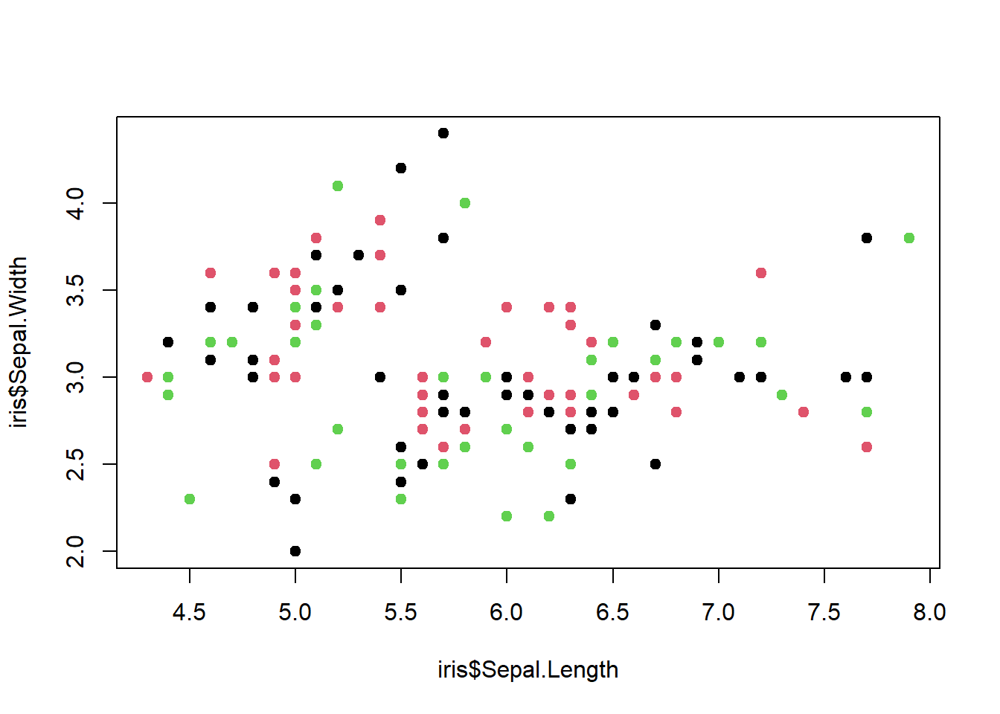
En précisant uniquement 3 couleurs, l’argument col va en réalité prendre en entrée un vecteur de longueur 150 ou le trio de couleur sera répliqué 50 fois pour qu’à chaque fleur soit associée une couleur.
## [1] 1 2 3 1 2 3 1 2 3 1 2 3 1 2 3 1 2 3 1 2 3 1 2 3 1 2 3 1 2 3 1 2 3 1 2
## [36] 3 1 2 3 1 2 3 1 2 3 1 2 3 1 2 3 1 2 3 1 2 3 1 2 3 1 2 3 1 2 3 1 2 3 1
## [71] 2 3 1 2 3 1 2 3 1 2 3 1 2 3 1 2 3 1 2 3 1 2 3 1 2 3 1 2 3 1 2 3 1 2 3
## [106] 1 2 3 1 2 3 1 2 3 1 2 3 1 2 3 1 2 3 1 2 3 1 2 3 1 2 3 1 2 3 1 2 3 1 2
## [141] 3 1 2 3 1 2 3 1 2 3On obtient le même graphique que ci-dessous et en l’occurrence les deux sont faux car les couleurs ne sont pas définies en fonction des espèces.

De plus, on constate que nous sommes limitées en nombre de couleurs. Dès lors que nous souhaitons représenter plus de 8 couleurs, nous faisons face au phénomène de réplication de R.
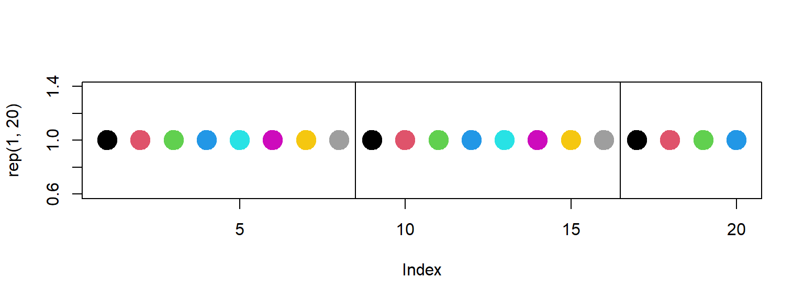
On peut alors utiliser la fonction colors() qui propose une palette de plus de 650 couleurs avec le même mécanisme que la palette par défaut.
## [1] "white" "aliceblue" "antiquewhite" "antiquewhite1"
## [5] "antiquewhite2" "antiquewhite3" "antiquewhite4" "aquamarine"
## [9] "aquamarine1" "aquamarine2" "aquamarine3" "aquamarine4"
## [13] "azure" "azure1" "azure2" "azure3"
## [17] "azure4" "beige" "bisque" "bisque1"## [1] 657

Pour personnaliser les couleurs dans R, on utilise donc des vecteurs en appelant les couleurs par leur nom ou leur indice. Cependant, en mémoire les couleurs sont codées en héxadécimales. C’est avec ce format que nous allons pouvoir créer notre propre palette de couleurs. Pour cela, il suffit de construire un vecteur avec les valeurs en héxadécimales des couleurs qu’on souhaite. On peut également utiliser la fonction rgb et l’argument alpha pour gérer la transparence. Le site https://htmlcolorcodes.com/fr/ propose toutes les couleurs qu’il est possible de définir.
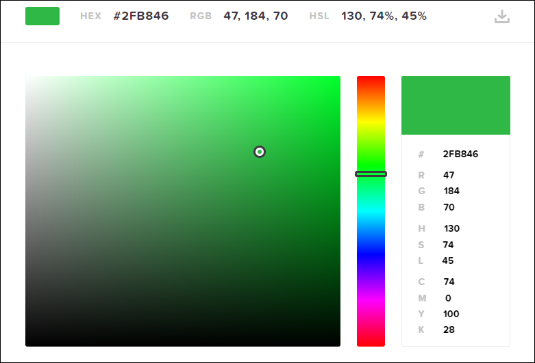
ma_palette <- c( vert = "#2FB846",
bleu = rgb(red = 4/255,green = 12/255 ,blue = 250/255 , alpha = 0.5))
ma_palette## vert bleu
## "#2FB846" "#040CFA80"par(mfrow = c(1,2))
plot(x = rep(1,20),pch=20, col= ma_palette , cex = 4)
plot(x = rep(1,20),pch=20, col= ma_palette[c("vert")] , cex = 4)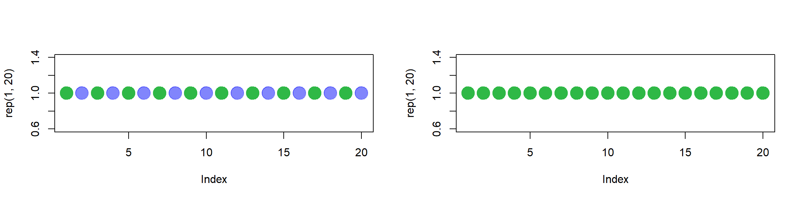
6.4 Type de graphique
Dans cette partie, nous allons énumérer les graphiques les plus populaires illustrés avec le dataset des applications google. Les différents éléments de personnalisation abordés précédemment sont disponibles pour n’importe quel type de graphique.
Le dataset google.csv décrit des applications du store google.
Le fichier est issu du site Kaggle. Il a été adapté dans ce livre.
Voici la présentation du jeu de données :
App: Nom de l’applicationCategory: Catégorie de l’applicationRating: Note moyenne des utilisateursReviews: Nombre d’avis d’utilisateursInstalls: Nombre d’installationType: Application gratuite / payantePrice: Prix de l’applicationContent.Rating: Public concernéLast.Updated: Date de la dernière versionSize_recode: Taille de l’application (en Mo)
| App | Category | Rating | Reviews | Installs | Type | Price | Content.Rating | Last.Updated | Size_recode |
|---|---|---|---|---|---|---|---|---|---|
| Photo Editor & Candy Camera & Grid & ScrapBook | ART_AND_DESIGN | 4.1 | 159 | 1e+04 | Free | 0 | Everyone | 2018-01-07T00:00:00Z | 19.0 |
| Coloring book moana | ART_AND_DESIGN | 3.9 | 967 | 5e+05 | Free | 0 | Everyone | 2018-01-15T00:00:00Z | 14.0 |
| U Launcher Lite – FREE Live Cool Themes, Hide Apps | ART_AND_DESIGN | 4.7 | 87510 | 5e+06 | Free | 0 | Everyone | 2018-08-01T00:00:00Z | 8.7 |
| Sketch - Draw & Paint | ART_AND_DESIGN | 4.5 | 215644 | 5e+07 | Free | 0 | Teen | 2018-06-08T00:00:00Z | 25.0 |
| Pixel Draw - Number Art Coloring Book | ART_AND_DESIGN | 4.3 | 967 | 1e+05 | Free | 0 | Everyone | 2018-06-20T00:00:00Z | 2.8 |
| Paper flowers instructions | ART_AND_DESIGN | 4.4 | 167 | 5e+04 | Free | 0 | Everyone | 2017-03-26T00:00:00Z | 5.6 |
| Smoke Effect Photo Maker - Smoke Editor | ART_AND_DESIGN | 3.8 | 178 | 5e+04 | Free | 0 | Everyone | 2018-04-26T00:00:00Z | 19.0 |
| Infinite Painter | ART_AND_DESIGN | 4.1 | 36815 | 1e+06 | Free | 0 | Everyone | 2018-06-14T00:00:00Z | 29.0 |
| Garden Coloring Book | ART_AND_DESIGN | 4.4 | 13791 | 1e+06 | Free | 0 | Everyone | 2017-09-20T00:00:00Z | 33.0 |
| Kids Paint Free - Drawing Fun | ART_AND_DESIGN | 4.7 | 121 | 1e+04 | Free | 0 | Everyone | 2018-07-03T00:00:00Z | 3.1 |
| Text on Photo - Fonteee | ART_AND_DESIGN | 4.4 | 13880 | 1e+06 | Free | 0 | Everyone | 2017-10-27T00:00:00Z | 28.0 |
| Name Art Photo Editor - Focus n Filters | ART_AND_DESIGN | 4.4 | 8788 | 1e+06 | Free | 0 | Everyone | 2018-07-31T00:00:00Z | 12.0 |
| Tattoo Name On My Photo Editor | ART_AND_DESIGN | 4.2 | 44829 | 1e+07 | Free | 0 | Teen | 2018-04-02T00:00:00Z | 20.0 |
| Mandala Coloring Book | ART_AND_DESIGN | 4.6 | 4326 | 1e+05 | Free | 0 | Everyone | 2018-06-26T00:00:00Z | 21.0 |
| 3D Color Pixel by Number - Sandbox Art Coloring | ART_AND_DESIGN | 4.4 | 1518 | 1e+05 | Free | 0 | Everyone | 2018-08-03T00:00:00Z | 37.0 |
| Learn To Draw Kawaii Characters | ART_AND_DESIGN | 3.2 | 55 | 5e+03 | Free | 0 | Everyone | 2018-06-06T00:00:00Z | 2.7 |
| Photo Designer - Write your name with shapes | ART_AND_DESIGN | 4.7 | 3632 | 5e+05 | Free | 0 | Everyone | 2018-07-31T00:00:00Z | 5.5 |
| 350 Diy Room Decor Ideas | ART_AND_DESIGN | 4.5 | 27 | 1e+04 | Free | 0 | Everyone | 2017-11-07T00:00:00Z | 17.0 |
| FlipaClip - Cartoon animation | ART_AND_DESIGN | 4.3 | 194216 | 5e+06 | Free | 0 | Everyone | 2018-08-03T00:00:00Z | 39.0 |
| ibis Paint X | ART_AND_DESIGN | 4.6 | 224399 | 1e+07 | Free | 0 | Everyone | 2018-07-30T00:00:00Z | 31.0 |
6.4.1 Boxplot
Les points représentent les outliers. L’argument horizontal permet de représenter le graphique à l’horizontal. D’autres arguments sont disponibles (cf : aide).
boxplot(x = google$Rating, main = "Distribution des notes des utilisateurs",
horizontal = TRUE,col = ma_palette)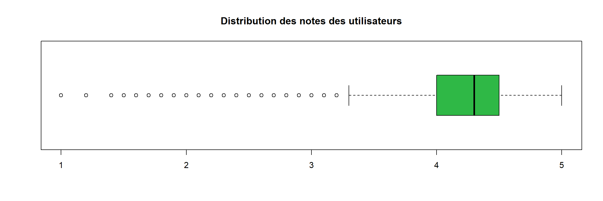
Il est possible de construire un boxplot dans un cadre bivarié :
boxplot(formula = google$Rating ~ google$Content.Rating,
main = "Distribution des notes des utilisateurs",
col = c(ma_palette, "red"))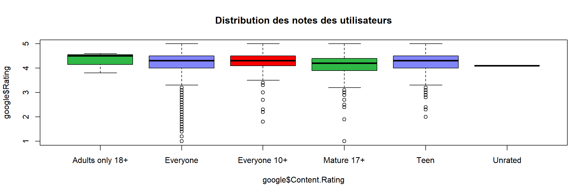
Ici on utilise les couleurs de palette différentes.
6.4.2 Histogramme
L’argument breaks permet de définir le nombre de classe et probability d’afficher la densité plutôt que les effectifs ou fréquence. D’autres arguments sont disponibles (cf : aide).
hist(x = google$Rating, main = "Distribution des notes des utilisateurs",
col = ma_palette[2] , breaks = 8, probability = TRUE)
La fonction lines permet d’ajouter une courbe sur un graphique existant. Ici on représente la courbe densité avec la fonction density.
hist(x = google$Rating, main = "Distribution des notes des utilisateurs",
col = ma_palette[2] , breaks = 8, probability = TRUE)
lines(density(google$Rating), lty = 2, col = ma_palette[1], lwd = 4)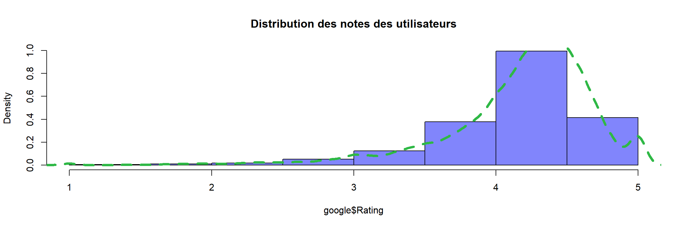
6.4.3 Diagramme en circulaire
L’argument labels permet de renseigner les étiquettes du graphique. Si on souhaite afficher les étiquettes en pourcentage, il faut calculer un tri à plat avec les pourcentages. D’autres arguments sont disponibles (cf : aide).
##
## Free Paid
## 7592 604## [1] "Free 7592" "Paid 604"pie(x = tri_a_plat, main = "Repartition du nombre d'applications par type",
col = ma_palette, labels = paste(rownames(tri_a_plat),tri_a_plat))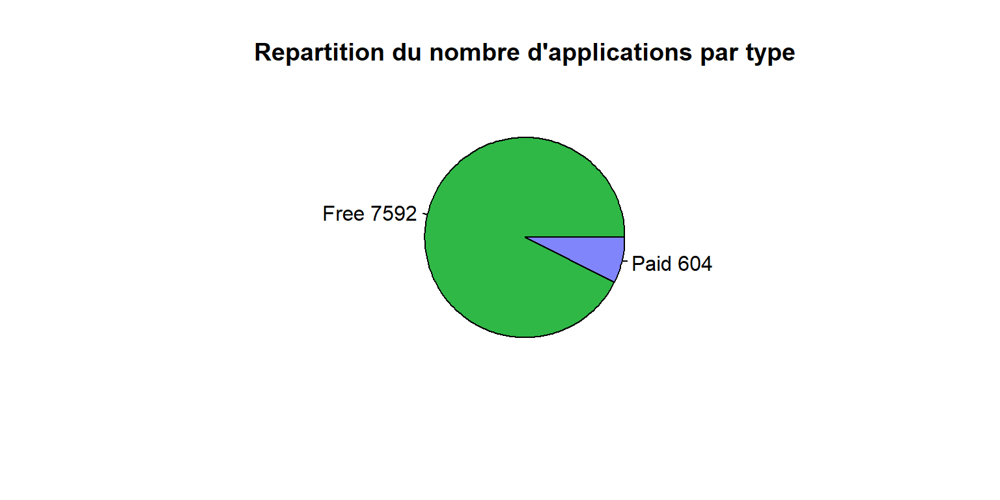
6.4.4 Diagramme en barre
Même principe pour le diagramme en barre, on doit calculer un tri à plat dans un premier temps. L’argument horiz permet de représenter le graphique à l’horizontal. D’autres arguments sont disponibles (cf : aide).
tri_a_plat <- table(google$Type)
barplot(height = tri_a_plat,
main = "Repartition du nombre d'applications par type",
col = colors()[c(45,99)], horiz = TRUE)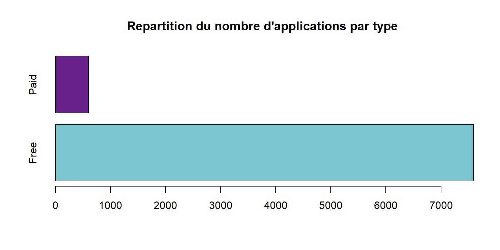
Il est possible de construire un diagramme en barre dans un cadre bivarié. L’argument beside permet de préciser si on souhaite un diagramme empilé ou non. La fonction prop.table permet d’obtenir un tableau en pourcentage.
##
## Free Paid
## Adults only 18+ 0.0003660322 0.0000000000
## Everyone 0.7448755490 0.0625915081
## Everyone 10+ 0.0334309419 0.0037823328
## Mature 17+ 0.0417276720 0.0018301611
## Teen 0.1057833089 0.0054904832
## Unrated 0.0001220107 0.0000000000par(mfrow = c(1,2))
barplot(height = tri_croise, legend = rownames(tri_croise))
barplot(height = tri_croise, legend = rownames(tri_croise) , beside = TRUE)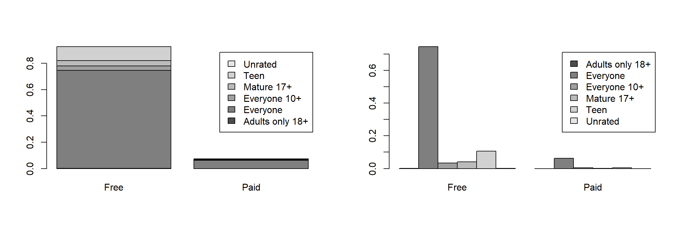
6.4.5 Nuage de points
Ici on représente un nuage de points avec la présentation par défaut.
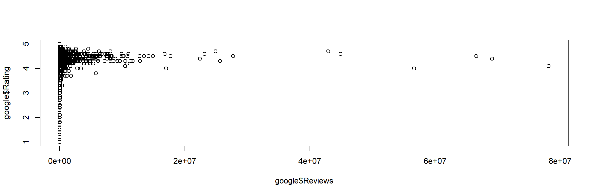
Puis le même en y ajoutant des éléments de personnalisation.
## [1] "factor"plot(x = google$Reviews, y = google$Rating, pch = 19, cex = 0.5,
xlim = c(0,3e+7), col = google$Content.Rating)
legend(x = "bottomright", legend=levels(google$Content.Rating),
col = 1:length(levels(google$Content.Rating)), pch = 19, cex=0.8)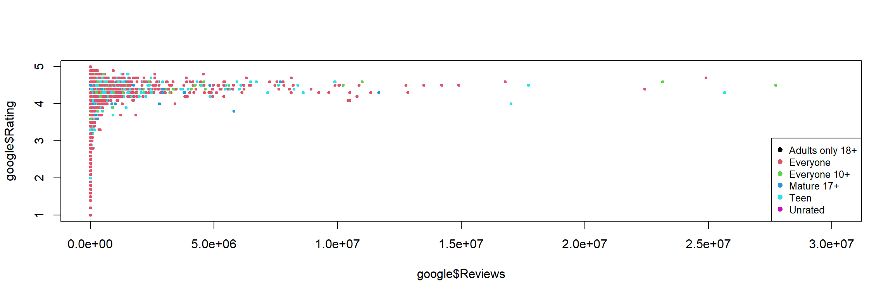
6.5 Exercice
6.5.1 Sujet
Dans ce TD, on utilise le fichier pokemon.xlsx qui décrit les statistiques des pokemon des deux premières générations.
Le fichier est issu du site Kaggle. Il a été adapté pour ce TP. Voici une description des données :
pokedex_number: numéro du pokemonnom: nom du pokemongeneration: le numéro de génération dont est issu le pokemonis_legendary: Oui / Non si le pokemon est légendairetype: le type du pokemonweight_kg: le poids du pokemon en kgheight_m: la taille du pokemon en mètreattack: la puissance d’attaque du pokemondefense: la puissance de défense du pokemonspeed: la vitesse du pokemon
| pokedex_number | nom | generation | is_legendary | type | weight_kg | height_m | attack | defense | speed |
|---|---|---|---|---|---|---|---|---|---|
| 1 | Bulbizarre | 1 | Non | grass | 6.9 | 0.7 | 49 | 49 | 45 |
| 2 | Herbizarre | 1 | Non | grass | 13.0 | 1.0 | 62 | 63 | 60 |
| 3 | Florizarre | 1 | Non | grass | 100.0 | 2.0 | 100 | 123 | 80 |
| 4 | Salameche | 1 | Non | fire | 8.5 | 0.6 | 52 | 43 | 65 |
| 5 | Reptincel | 1 | Non | fire | 19.0 | 1.1 | 64 | 58 | 80 |
| 6 | Dracaufeu | 1 | Non | fire | 90.5 | 1.7 | 104 | 78 | 100 |
| 7 | Carapuce | 1 | Non | water | 9.0 | 0.5 | 48 | 65 | 43 |
| 8 | Carabaffe | 1 | Non | water | 22.5 | 1.0 | 63 | 80 | 58 |
| 9 | Tortank | 1 | Non | water | 85.5 | 1.6 | 103 | 120 | 78 |
| 10 | Chenipan | 1 | Non | bug | 2.9 | 0.3 | 30 | 35 | 45 |
| 11 | Chrysacier | 1 | Non | bug | 9.9 | 0.7 | 20 | 55 | 30 |
| 12 | Papilusion | 1 | Non | bug | 32.0 | 1.1 | 45 | 50 | 70 |
| 13 | Aspicot | 1 | Non | bug | 3.2 | 0.3 | 35 | 30 | 50 |
| 14 | Coconfort | 1 | Non | bug | 10.0 | 0.6 | 25 | 50 | 35 |
| 15 | Dardargnan | 1 | Non | bug | 29.5 | 1.0 | 150 | 40 | 145 |
| 16 | Roucool | 1 | Non | normal | 1.8 | 0.3 | 45 | 40 | 56 |
| 17 | Roucoups | 1 | Non | normal | 30.0 | 1.1 | 60 | 55 | 71 |
| 18 | Roucarnage | 1 | Non | normal | 39.5 | 1.5 | 80 | 80 | 121 |
| 19 | Rattata | 1 | Non | normal | NA | NA | 56 | 35 | 72 |
| 20 | Rattatac | 1 | Non | normal | NA | NA | 71 | 70 | 77 |
Importez le jeu de données
pokemon.xlsxà l’aide du packagereadxl.Combien de lignes, colonnes sont présentes dans cette table ?
Affichez le nom des colonnes
Affichez un résumé des données
Construire un diagramme en barre du nombre de pokemon par
typeavec les paramètres par défaut puis essayez de le personnaliser comme ci-dessous.

- Construire un diagramme circulaire présentant la répartition du nombre de pokemon légendaires ou non (
is_legendary) avec les paramètres par défaut puis essayez de le personnaliser comme ci-dessous.

- Construire un diagramme empilé présentant la répartition en pourcentage du nombre de pokemon légendaires ou non pour chaque génération avec les paramètres par défaut puis essayez de le personnaliser comme ci-dessous.

- Construire un histogramme de la distribution de la vitesse (
speed) des pokemon avec les paramètres par défaut puis essayez de le personnaliser comme ci-dessous.
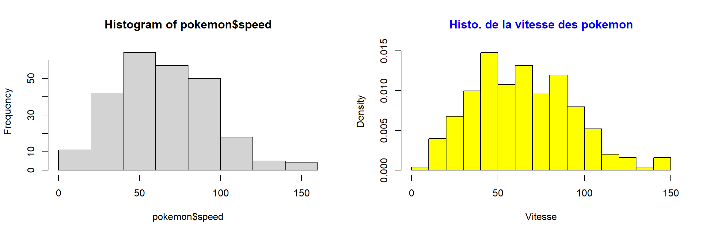
- Construire un nuage de points de la vitesse (
speed) et du poids (weight_kg) des pokemon avec les paramètres par défaut puis essayez de le personnaliser comme ci-dessous. Puis, calculez le coefficient de corrélation entre ces deux variables avec la fonctioncor.

## [1] "Le coefficient de corrélation est :"## [1] 0.1525117- Construire un diagramme en boîte de la distribution de la statistique
speeddes pokemon avec les paramètres par défaut puis essayez de le personnaliser comme ci-dessous.
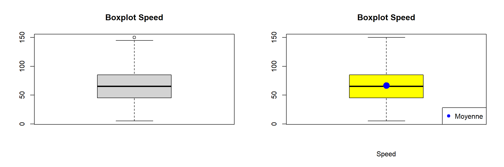
- Construire un diagramme en boîte de la distribution de la statistique
attackdes pokemon selon letypeavec les paramètres par défaut puis essayez de le personnaliser comme ci-dessous.
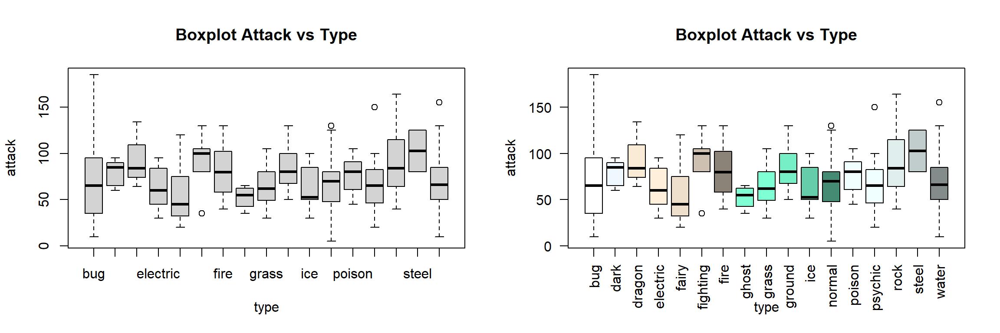
6.5.2 Correction
- Importez le jeu de données
pokemon.xlsxà l’aide du packagereadxl.
- Combien de lignes, colonnes sont présentes dans cette table ?
- Affichez le nom des colonnes
- Affichez un résumé des données
- Construire un diagramme en barre du nombre de pokemon par
typeavec les paramètres par défaut puis essayez de le personnaliser comme ci-dessous.
count <- table(pokemon$type)
par(mfrow = c(1,2))
barplot(count, cex.names = 0.4)
barplot(sort(count, decreasing = TRUE),
horiz = TRUE, las = 2,
xlab = "Nombre de pokemon",
col = "yellow", col.main = "blue",
main = "Nombre de pokemon \n par type")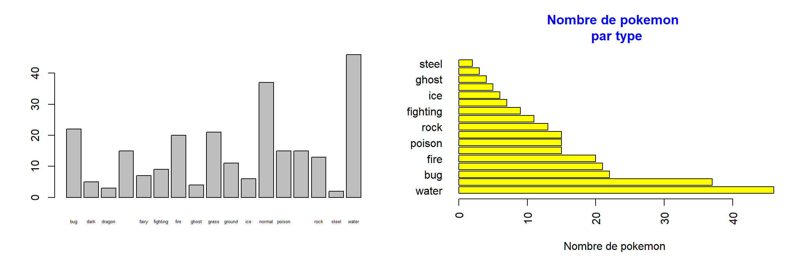
- Construire un diagramme circulaire présentant la répartition du nombre de pokemon légendaires ou non (
is_legendary) avec les paramètres par défaut puis essayez de le personnaliser comme ci-dessous.
count <- table(pokemon$is_legendary)
par(mfrow = c(1,2))
pie(count)
pie(count, main = "Repartition pokemon \n legendaire ou non",
col = c("yellow","blue"),
col.main = "blue", labels =
paste(rownames(count),count))
- Construire un diagramme empilé présentant la répartition en pourcentage du nombre de pokemon légendaires ou non pour chaque génération avec les paramètres par défaut puis essayez de le personnaliser comme ci-dessous.
count <- table(pokemon$is_legendary, pokemon$generation)
count_freq <- prop.table(count,margin = 2)
par(mfrow = c(1,2))
barplot(count_freq, legend = rownames(count_freq))
barplot(count_freq, las = 2, xlab = "Nombre de pokemon",
main = "Nb pokemon par generation si legendaire",
col = c("yellow","blue"),
legend = rownames(count_freq), beside = TRUE)
- Construire un histogramme de la distribution de la vitesse (
speed) des pokemon avec les paramètres par défaut puis essayez de le personnaliser comme ci-dessous.
par(mfrow = c(1,2))
hist(x = pokemon$speed)
hist(x = pokemon$speed, breaks = 20,
probability = TRUE,
col = "yellow", xlab = "Vitesse",
main = "Histo. de la vitesse des pokemon",
col.main = "blue")
- Construire un nuage de points de la vitesse (
speed) et du poids (weight_kg) des pokemon avec les paramètres par défaut puis essayez de le personnaliser comme ci-dessous. Puis, calculez le coefficient de corrélation entre ces deux variables avec la fonctioncor.
par(mfrow = c(1,2))
plot(x = pokemon$speed, y = pokemon$weight_kg)
plot(x = pokemon$speed, y = pokemon$weight_kg,
col = as.factor(pokemon$is_legendary))
legend(x = "topright",
legend = c("Legendaire : Oui", "Legendaire : Non"),
col= 1:2, cex=1, pch = 1)
#On récupère les statistiques de Mewtwo
Mewtwo <- pokemon[pokemon$nom == "Mewtwo",
c("speed", "weight_kg")]
#On les affiche avec la fonction text
text(x = Mewtwo[1], y = Mewtwo[2]+40,
labels = "Mewtwo")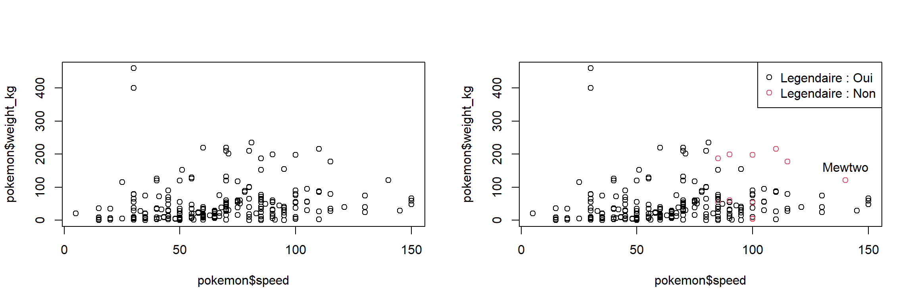
#argument use pour gérer les NA (voir aide)
cor(x = pokemon$speed, y = pokemon$weight_kg,
use = "complete.obs")## [1] 0.1525117- Construire un diagramme en boîte de la distribution de la statistique
speeddes pokemon avec les paramètres par défaut puis essayez de le personnaliser comme ci-dessous.
par(mfrow = c(1,2))
boxplot(x = pokemon$speed, main = "Boxplot Speed")
boxplot(x = pokemon$speed, main = "Boxplot Speed",
range = 0, xlab = "Speed", col = "yellow")
points(mean(pokemon$speed,na.rm = TRUE),
cex = 2, pch = 19, col = "blue")
legend(x = "bottomright", legend= "Moyenne",
col= "blue", pch = 19, cex=1)
- Construire un diagramme en boîte de la distribution de la statistique
attackdes pokemon selon letypeavec les paramètres par défaut puis essayez de le personnaliser comme ci-dessous.
par(mfrow = c(1,2))
boxplot(formula = attack ~ type,
data = pokemon,
main = "Boxplot Attack vs Type")
boxplot(formula = attack ~ type,
data = pokemon,
main = "Boxplot Attack vs Type",
las = 2, col = colors())
6.6 Aller plus loin
- Utiliser le package ggplot2 avec le cours de Julien Barnier
- Constuire des graphiques avec l’interface esquisse avec le cours de Dreams Rs
- Utiliser des widgets HTML avec la Galerie pour construire des graphiques dynamiques
6.7 Testez vos connaissances !

Testez vos connaissances sur ce chapitre avec ce quiz (10 min) en cliquant ici.